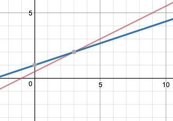
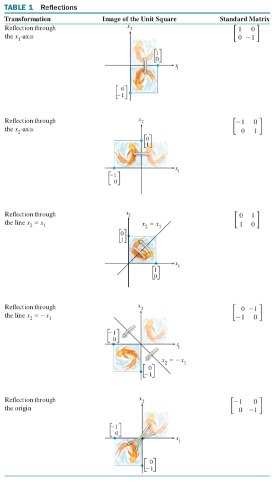
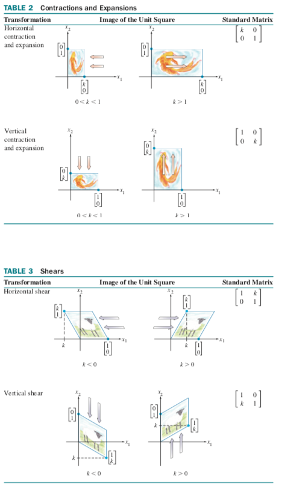
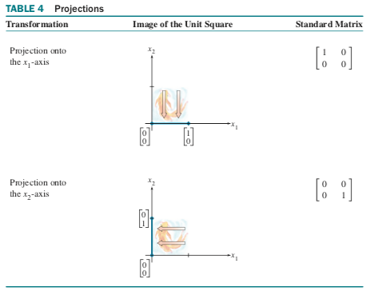
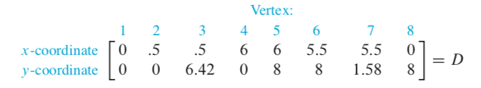
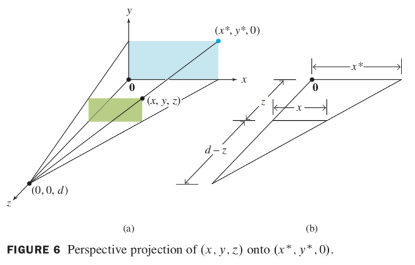
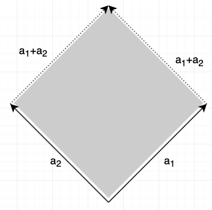

Linear Algebra
Contents
- Introduction
- Solution sets of linear systems
- Linear transformations
- Matrix operations
- Applications to computer graphics
- Subspaces
- Eigenvectors & eigenvalues
- Determinant
- Similarity
- Diagonalization
- Inner (dot) product & uses
- Orthogonality
Introduction
Linear Equations
"the study of linear equations"
a linear equation in the variables \(x_1, \dots, x_n\) has the form \(a_1 x_1+\dots+a_n x_n = b\), with \(a_1, \dots, a_n\) being the coefficients
geometric interpretation:
\[ \begin{alignat*}{3} &n=1\qquad &&a_1 x_1 = b \longrightarrow x_1 = \frac{b}{a_1}\qquad &&\text{(point on a line in $\Re$)}\\ &n=2\qquad &&a_1 x_1 + a_2 x_2 = b \longrightarrow x_2 = \frac{b}{a_2} - \frac{a_1}{a_2}\qquad &&\text{(line in a plane in $\Re^2$)}\\ &n=3\qquad &&a_1 x_1 + a_2 x_2 + a_3 x_3 = b\qquad &&\text{(planes in 3D space, in $\Re^3$)} \end{alignat*} \]in general, \(n-1\)-dimensional planes in n-dimensional space
system of linear equations \(x_1, \dots, x_n\) is a collection of linear equations in these variables.
\(x_1 - 2x_2 = -1\)
\(-x_1 + 3x_2 = 3\)
If you graph them, you get this:

the solution is the intersection.
a system of linear equations has:
- no solutions (inconsistent) -- e.g. parallel lines
- exactly 1 solution (consistent)
- infinitely many solutions (consistent) - e.g. the same line twice
two linear systems are "equivalent" if they have the same solutions.
Matrix notation
| Equation | (Augmented) coefficient matrix notation |
|---|---|
| \(\begin{alignat*}{6} &x_1 &&-&&2x_2 &&+&&x_3 &&= 0\\ & && &&2x_2 &&-&&8x_3 &&= 8\\ &5x_1 && && &&-&&5x_3 &&= 10\end{alignat*}\) | \(\begin{bmatrix} 1 & -2 & 1 & 0\\ 0 & 2 & -8 & 8\\ 5 & 0 & -5 & 10 \end{bmatrix}\) |
the strategy to solve is to replace the system with an equivalent system that is easier to solve.
elementary row operations:
- replacement: add rows
- scaling: multiply by constant (non-zero scalar)
- interchange: swap two rows
all of these are reversible & don't change the solution set.
Matrices A and B are equivalent (\(A \sim B\)) if there is a sequence of elementary operations to transform A to B.
If augmented matrices of two systems are row-equivalent, then the systems are equivalent.
Matrix A is in echelon form if:
- zero rows are below non-zero rows
- the leading entry of a row is contained in a column that is to the left of the leading entry of the row below it.
A is in reduced echelon form if:
- A is in echelon form
- all leading entries are 1
- the leading entry is the only non-zero entry in that column
Reducing a matrix
The reduced echelon form of a matrix is unique.
every matrix is row-equivalent to a unique reduced echelon matrix.
the positions of the leading entries in an echelon matrix are unique
\(\begin{bmatrix} \textbf{1} & * & * & *\\ 0 & 0 & \textbf{1} & *\\ 0 & 0 & 0 & 0\\ 0 & 0 & 0 & 0 \end{bmatrix}\)
the values in bold are pivot positions. the columns containing those values are pivot columns.
Row reduction algorithm:
- Start with leftmost non-zero column (pivot column)
- Select a non-zero entry as pivot and move it to the pivot position.
- Create zeros below the pivot position.
- Ignore the row containing the pivot position & repeat steps 1-3 until solved. The matrix will be in echelon form.
- Make pivot positions equal to 1, create zeros in all pivot columns. Start with the rightmost column. The matrix will be in reduced echelon form.
Side note: a computer chooses as pivot the entry that's smallest in absolute value to minimize the round-off error.
Basic variables correspond to pivot columns. Free variables correspond to non-pivot columns. You solve the equation by expressing basic variables in terms of free variables.
The matrix can be written in parametric form, example with \(x_3\) being a free variable:
\(\binom{x_1}{x_2} = \big\{ \binom{1}{4} + \binom{5}{-1} x_3 \;\rvert\; x_3 \in \Re \big\}\)
if there are any free variables, there are infinite solutions.
Vectors
A vector is a line. If you have a vector in the form \(\begin{bmatrix} a\\b\end{bmatrix}\), you can draw it as an arrow from the origin ending at the point \((a,b)\).
To add vectors, add the individual cells together.
A vector equation \(a_1 x_1 + a_2 x_2 + \dots + a_n x_n = b\) has the same solution set as \(\begin{bmatrix} a_1 & a_2 & \dots & a_n & b \end{bmatrix}\).
When asked whether \(b\) is in \(\text{Span} \{v_1, \dots, v_p\}\), you have to check whether the augmented matrix \(\begin{bmatrix} v_1 & \dots & v_p & b \end{bmatrix}\) has a solution.
\(b\) is a linear combination of \(A\) if \(Ax = b\) has a solution.
The span is the set of all linear combinations of the vectors.
To calculate \(Ax\), if the number of columns in A is the same as the number of rows in x, you can follow the definition:
\[ Ax = \begin{bmatrix} a_1 & a_2 & \dots & a_n \end{bmatrix} \begin{bmatrix} x_1 \\ \dots \\ x_n \end{bmatrix} = x_1 a_1 + x_2 a_2 + \dots + x_n a_n \]You also have the rules (matrix A, vectors u and v, scalar c):
- \(A(u+v) = Au + Av\)
- \(A(cu) = c(Au)\)
Solution sets of linear systems
Homogeneous linear systems
homogeneous: if you can write it in \(Ax = 0\) where A is an \(m \times n\) matrix and 0 is the zero vector in \(\Re^m\)
- always has at least one solution (the trivial solution, \(x = 0\)).
-
has a nontrivial solution iff there is a free variable
- if the equation has only one free variable, the solution is a line through the origin
- when there are two or more free variables, it's a line through the origin
- solution set is \(\text{Span} \{v_1, \ldots, v_p\}\) for suitable vectors
Parametric vector form
implicit description:
- a simple equation
- e.g. \(10x_1 - 3x_2 - 2x_3 = 0\)
explicit description (parametric vector form):
- the solution to the equation as a set spanned by u and v
- of the form \(x = su + tv\), with \(s,t \in \Re\)
the solution set of \(Ax = 0\) is \(x = tv\) with \(t \in \Re\).
if \(Ax = b\) has a solution, then you get the solution set by translating the solution set of \(Ax = 0\) using any particular solution p of \(Ax = b\). The set is then \(x = p + tv\)
Writing a solution set in parametric vector form:
- Row reduce augmented matrix to echelon form
- Express each basic variable in terms of any free variables.
- Write a typical solution x as a vector, with entries depending on the (potential) free variables.
- Decompose x into a linear combination of vectors using free vars as parameters.
Linear independence
linearly independent:
- set of vector equations: iff the vector equation has only the trivial solution (\(x_1 = x_2 = x_3 = 0\))
- columns of matrix: iff \(Ax = 0\) has only the trivial solution
- one vector: iff v is not the zero vector
- two vectors: if neither of the vectors is a multiple of the other
linearly dependent:
- iff at least one of the vectors is a linear combination of the others
- if there are more vectors than entries in each vector
- if the set contains the zero vector
a set is linearly dependent iff it's not linearly independent.
Linear transformations
definitions:
- transformation, function, mapping: rule assigning to each vector in \(\Re^n\) a vector \(T(x)\) in \(\Re^m\)
- domain: set \(\Re^n\)
- codomain: set \(\Re^m\)
- image: vector T(x)
- range: set of all images T(x)
a projection transformation happens if you go to a lower dimension (e.g. \(x_3\) becomes 0). a shear transformation happens if a 2D square is tilted sideways into a parallelogram.
a transformation T is linear if:
- \(T(u + v) = T(u) + T(v)\) for all \(u,v \in \text{Domain}(T)\)
- \(T(cu) = cT(u)\) for all scalars c and all \(u \in \text{Domain}(T)\)
linear transformations preserve operations of vector addition and scalar multiplication.
if T is a linear transformation, then:
- \(T(0) = 0)\)
- \(T(cu + dv) = cT(u) + dT(v)\)
- \(T(c_1 v_2 + \dots + c_p v_p) = c_1 T(v_1) + \dots + c_p T(v_p)\) (superposition principle)
given scalar r, and \(T: \Re^2 \rightarrow \Re^2\) by \(T(x) = rx\)
- contraction: when \(0 \leq r \leq 1\)
- dilation: when \(r > 1\)
every linear transformation \(\Re^n \rightarrow \Re^m\) is a matrix transformation \(x \mapsto Ax\).
\(A = [[T(e_1) \dots T(e_n)]\), where \(e_j\) is the jth column of the identity matrix in \(\Re^n\)
geometric linear transformations of \(\Re^2\):
  
types of mappings:
- \(T: \Re^n \rightarrow \Re^m\) is 'onto' \(\Re^m\) if each b in \(\Re^m\) is the image of at least one x in \(\Re^n\).
-
\(T: \Re^n \rightarrow \Re^m\) is one-to-one if each b in \(\Re^m\) is the image of max one x in \(\Re^n\).
- so if \(T(x) = 0\) only has the trivial solution
for mapping \(T: \Re^n \rightarrow \Re^m\) and standard matrix \(A\):
- T maps \(\Re^n\) onto \(\Re^m\) iff columns of matrix span \(\Re^m\)
- T is one-to-one iff columns of matrix are linearly independent.
Matrix operations
\(a_{ij}\) is the entry in the ith row and jth column of A
diagonal entries are \(a_{11}\), \(a_{22}\), etc. and form the main diagonal. if non-diagonal entries are zero, then it's a diagonal matrix.
equal matrices have same size and their corresponding entries are equal.
Sums and scalar multiples
sum A+B: sum corresponding entries in A and B.
scalar multiple \(rA\) is matrix whose columns are r times the corresponding columns in A (with r scalar).
the usual rules of algebra apply to sums and scalar multiples of matrices.
when matrix B multiplies vector x, it transforms x into vector \(Bx\). if \(Bx\) is multiplied by A, the result is \(A(Bx)\). \(A(Bx)\) is produced from x by composition of mappings, which can be represented as multiplication by a single matrix AB.
\(A(Bx) = (AB)x\)
\(AB = A \begin{bmatrix} b_1 & b_2 & \dots & b_p \end{bmatrix} = \begin{bmatrix} Ab_1 & Ab_2 & \dots & Ab_p \end{bmatrix}\)
A is matrix, B is matrix with columns \(b_1 \dots b_p\).
each column of AB is a linear combination of columns of A using weights from corresponding column of B. AB has the same number of rows as A and same number of columns as B. if the number of columns of A does not match number of rows of B, the product is undefined. in general, AB ≠ BA.
if product AB is defined, then:
\((AB)_{ij} = a_{i1} b_{1j} + a_{i2} b_{2j} + \dots + a_{in} b_{nj}\)
\(row_i (AB) = row_i (A) \times B\)
Powers of a matrix
\(A^k = \underbrace{A \dots A}_{k}\)
with \(A\) an n × n matrix and k a positive integer.
Transpose of a matrix
a matrix \(A'\) whose columns are made up of the corresponding rows of \(A\)
properties:
- \((A^T)^T = A\)
- \((A+B)^T = A^T + B^T\)
- \((rA)^T = rA^T\) with r a scalar
- \((AB)^T = B^T A^T\)$
the transpose of a product of matrices == product of their transposes in reverse order
Inverse of a matrix
invertible (singular) if there is same size matrix C such that \(CA = I\) and \(AC = I\) where I is the n × n identity matrix.
identity matrix: a matrix where the diagonals are all 1.
C is uniquely determined by A, so: \(A^{-1} A = I\).
let \(A = \begin{bmatrix} a & b \\ c & d \end{bmatrix}.\) if \(ad - bc \ne 0\) then \(A^{-1} = \frac{1}{ad - bc} \begin{bmatrix} d & -b \\ -c & a \end{bmatrix}\)
determinant: \(\det A = ad - bc\)
if A is invertible (determinant is not 0), then for each \(b \in \Re^n\) the solution of \(Ax = b\) is \(A^{-1} b\).
properties of inverse:
- \((A^{-1})^{-1} = A\)
- \((AB)^{-1} = B^{-1} A^{-1}\) (watch out for order!)
- \((A^T)^{-1} = (A^{-1})^T\)
finding \(A^{-1}\):
- Row reduce augmented matrix \(\begin{bmatrix} A & I \end{bmatrix}\).
- if A is row equivalent to I, then \(\begin{bmatrix} A & I \end{bmatrix}\) is row equivalent to \(\begin{bmatrix} I & A^{-1} \end{bmatrix}\)
- otherwise, A doesn't have an inverse.
Elementary matrices
elementary matrix: obtained by performing single elementary row operation on identity matrix
if elementary row operation is performed on m × n matrix A, result is EA, with E an m × m matrix obtained by performing same row operation on \(I_m\)
inverse of any elementary matrix E is of same type that transforms E back into I.
an n × n matrix A is only invertible if A is row equivalent to \(I_n\). any sequence of elementary operations reducing A to \(I_n\) also transforms \(I_n\) into \(A^{-1}\).
Applications to computer graphics
graphics are stored in a matrix, such as this:
 
Homogeneous coordinates
2D
each point (x, y) in 2D can be identified with point (x, y, 1) in 3D. so we say that (x, y) has homogeneous coordinates (x, y, 1).
e.g. translation is not a linear transformation. but \((x, y) \mapsto (x+h, y+k)\) can be written in homogeneous coordinates as \((x, y, 1) \mapsto (x+h, y+k, 1)\), and can be computed using matrix multiplication:
\(\begin{bmatrix} 1 & 0 & h\\ 0 & 1 & k\\ 0 & 0 & 1\end{bmatrix} \begin{bmatrix} x \\ y \\ 1 \end{bmatrix} = \begin{bmatrix} x+h \\ y+k \\ 1 \end{bmatrix}\)
3D
(X, Y, Z, H) are homogeneous coordinates for (x, y, z) if H ≠ 0 and
\(x = \frac{X}{H}, \quad y = \frac{Y}{H}, \quad \text{and} \; z = \frac{Z}{H}\)
Composite transformations
when you need two or more basic transformations, such a composite transformation is a matrix multiplication.
Perspective projections
maps each point (x, y, z) onto an image point (x*, y*, 0) so that two points and eye position (center of projection) are on a line.

Subspaces
subspace of \(\Re^n\) is any set H in \(\Re^n\) that has properties:
- The zero vector is in H
- For each u and v in H, the sum \(u + v\) is in H
- For each u in H and each scalar c, the vector \(cu\) is in H
the zero subspace is the set that only contains zero vector in \(\Re^n\)
Column space and null space of a matrix
column space: set of all linear combinations of the columns of a matrix
column space of m × n matrix is subspace of \(\Re^m\)
null space: set of all solutions of equation \(Ax = 0\).
null space of an m × n matrix is subspace of \(\Re^n\).
Basis for a subspace
basis for subspace H of \(\Re^n\) is linearly independent set in H spanning H
the pivot columns of a matrix form the basis for its column space.
Coordinates
let \(H \in \Re^n\) be subspace with \(B = \{ b_1, \dots, b_p\}\). then for all x ∈ H, there are unique \(c_1, \dots, c_p\) such that \(x = c_1 b_2 + \dots + c_p b_p\). (to prove this theorem, use a contradiction on uniqueness)
the coordinates of x w.r.t. B are \(c_1, \dots, c_p\).
the coordinate system of x w.r.t. B is \([x]_B = \begin{bmatrix}c_1\\ \dots\\ c_p\end{bmatrix}\)
Dimension of a subspace
let \(H \in \Re^n\) be a subspace with basis \(B=\{ b_1, \dots, b_p \}\). then every basis for H comprises p vectors.
the dimension of H is the number of basis vectors in any basis for H.
dim Col A = #pivot columns (rank A)
dim Nul A = #free variables in Ax = 0
Rank theorem: dim Col A + dim Nul A = #columns
Eigenvectors & eigenvalues
let A be n × n, \(x \in \Re^n\) is an eigenvector of A if x ≠ 0 and \(\exists \lambda \in \Re\) such that \(Ax = \lambda x\)
x is eigenvector with corresponding eigenvalue λ.
Is a given vector \(u \in \Re^n\) an eigenvector of a given A (n × n)?
- Do \(Au\), check if result is a multiple of u.
Is a given λ an eigenvalue of A?
- \(\exists x \ne 0\) such that \(Ax - \lambda x = 0 \leftrightarrow (A-\lambda I_n)x = 0\) with nontrivial solutions.
The solution set of \((A-\lambda I_n)x = 0\) is the eigenspace corresponding to λ.
How to find a basis for the eigenspace of a given λ?
- calculate matrix for \(A-\lambda I_n\) where n is the number of rows or columns of A
- reduce matrix to reduced echelon form
- express solutions in parametric form (basic variables in terms of free variables)
- basis for eigenspace is the set of the coefficients
If λ = 0, then Ax = 0 has a nontrivial solution (and A is not invertible).
Eigenvectors corresponding to distinct eigenvalues are linearly independent.
Determinant
Geometric interpretation: let \(A = [a_1 \; a_2]\). then the determinant (absolute value) is the surface area (or volume in 3D):

Let A (n × n). A ~ U without scaling and using r row interchanges. then \(\det A = (-1)^r u_{11} \times \dots \times u_{nn}\)
A is invertible iff \(\det A \ne 0\)
\(\det AB = (\det A)(\det B)\)
λ is an eigenvalue of A iff \(\det (A-\lambda I) = 0\) (the characteristic equation of A)
The eigenvalues of A (n × n) are the solutions for λ. Multiplicity is the number of solutions for λ.
Similarity
given A and B (n × n), A is similar to B if ∃p s.t. \(A = PBP^{-1}\)
If A and B are similar, then they have the same characteristic polynomials (and the same eigenvalues with the same multiplicities)
Diagonalization
A is diagonalizable if A is similar to a diagonal matrix.
Diagonalization Theorem: A (n × n) is diagonalizable iff A has n linearly independent eigenvectors (the eigenbasis for \(\Re^n\))
\(A = P D P^{-1} \leftrightarrow\) columns of D are linearly independent eigenvectors and the diagonals of D are corresponding eigenvectors.
How to diagonalize a matrix:
- Find eigenvalues of A
- Find n = λ linearly independent eigenvectors
- Construct \(P = \begin{bmatrix} p_1 & p_2 & \ldots & p_n \end{bmatrix}\)
- Construct D from the corresponding eigenvalues on the diagonal. Order of eigenvalues must match the order for columns of P.
- Check \(A = p D p^{-1} \leftrightarrow Ap = pD\) (if p is invertible)
If A (n × n) has n distinct eigenvalues, it is diagonalizable.
Inner (dot) product & uses
let \(u,v \in \Re^n\). then, \(u \cdot v = u^T v \in \Re\).
in English, to calculate you just multiply the vectors row-wise, and sum all the results.
Regular algebraic rules apply.
\(u \cdot u \geq 0\), only 0 iff u = 0.
Length of a vector
Let \(v \in \Re^n\), then the norm (length) of v is \(\|v\| = \sqrt{v \cdot v}\).
Does the norm coincide with length of line segments? Yes:
\(x = \begin{bmatrix}a\\b\end{bmatrix}, \quad \|v\| = \sqrt{v \cdot v} = \sqrt{a^2 + b^2} = \text{Pythagoras}\)
Distance between vectors
Let \(u,v \in \Re^n\). then, \(\text{dist}(u,v) = \|u-v\|\).
Orthogonality
let \(u,v \in \Re^n\). orthogonal iff:
- \(u \cdot v = 0\)
- or \(\|u\|^2 + \|v\|^2 = \|u+v\|^2\)
Orthogonal complement
Let \(W \subset \Re^n\) a subspace, then orthogonal complement of W is \(W^\perp = \{x \in \Re^n | x \cdot v = 0 \forall u \in W \}\)
properties:
- \((colA)^\perp = (NulA)^T\)
- \((NulA)^\perp = (colA)^T\)
Orthogonal sets
a set \(\{v_1 \dots v_p\}\) is orthogonal if \(v_i \cdot v_j = 0 \forall i,j\). then \(\{v_1 \dots v_p\} is a basis for \)\text{Span}\{v_1 \dots v_p\}$
An orthogonal basis is a basis that is also an orthogonal set
Why orthogonal basis? Let \(W \in \Re^n\) be subspace with orthogonal basis \(\{u_1 \dots u_p\}\), then \(W \ni y = c_1 u_1 + \ldots + c_p u_p\), with \(c_i = \frac{y \cdot u_i}{u_i \cdot u_i}\) for i = 1...p.
An orthonormal set/basis is an orthogonal set/basis consisting of unit vectors (like \(\{e_1, \ldots, e_n\}\text{ for }\Re^n\)).
An m × matrix A has orthonormal columns iff \(A^T A = I_n\)
- \((Ax) \cdot (Ay) = x \cdot y\)
- \(\| Ax \| = \| x \|\)